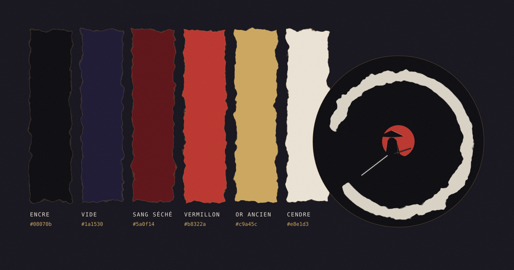
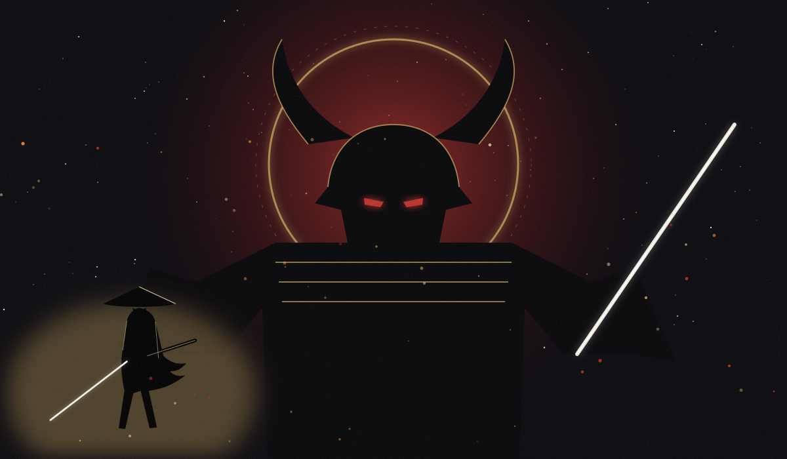

Devlog 03 — Direction artistique : l'encre, l'or et le vide
Six couleurs, des silhouettes lisibles à dix mètres et un soleil qui ne brille plus : les règles qui donnent son identité visuelle à Ronin of the Black Sun.

Quand nous avons commencé Ronin of the Black Sun, la question n'était pas « à quoi ressemble un samouraï dans l'espace ? », mais « comment éviter qu'il ressemble à tous les autres ? ». La science-fiction a ses néons, la fantasy sombre ses cathédrales. Nous voulions autre chose : une estampe japonaise qu'on aurait laissée brûler au bord d'un trou noir.
Six couleurs, pas une de plus
Toute l'image du jeu tient dans une palette de six teintes, que nous appelons « encre et braise ». Chaque couleur a un rôle précis, et nous refusons d'en ajouter une septième.
| Couleur | Code | Rôle dans le jeu |
|---|---|---|
| Encre | #08070b | Le vide, les silhouettes, tout ce qui menace |
| Vide | #1a1530 | La profondeur de l'espace, les zones sans gravité |
| Sang séché | #5a0f14 | Les terres du Shogunat, la corruption |
| Vermillon | #b8322a | Le danger, les sceaux, les coups critiques |
| Or ancien | #c9a45c | La lumière captive du Soleil Noir, les Torii de repos |
| Cendre | #e8e1d3 | La lame du ronin, l'interface, le texte |
La règle la plus importante : le vermillon signifie toujours le danger. Si un élément est rouge, il peut vous tuer. Les joueurs l'apprennent en quelques minutes, sans le moindre tutoriel.
Lire une silhouette à dix mètres
Dans un souls-like, comprendre un ennemi avant qu'il ne frappe est une question de survie. Chaque adversaire de Ronin of the Black Sun doit donc être reconnaissable en silhouette pure, en noir sur fond clair. Nous imprimons nos personnages en vignettes de deux centimètres : si l'équipe ne devine pas leur arme et leur attaque principale, le design repart à zéro.
C'est pour cela que les Daimyō du Vide portent des casques démesurés, des cornes en croissant et des bannières dans le dos : ce sont des formes qu'on lit de loin, même dans le chaos d'un combat en apesanteur.

L'encre comme matière
Nos textures ne cherchent pas le réalisme. Les rochers, les armures et même les nébuleuses sont peints avec des coups de pinceau inspirés du sumi-e, la peinture japonaise à l'encre. Les bords sont irréguliers, l'encre « bave » légèrement : en jeu, cela donne l'impression de traverser un rouleau peint plutôt qu'une simulation spatiale.
Le motif central est le Soleil Noir : une éclipse permanente, un disque d'encre cerclé d'or. On le voit depuis presque tous les lieux du jeu, comme la Sainte-Victoire se voit depuis presque tout le pays d'Aix. Ce n'est pas un hasard.
Ce que nous avons abandonné
- Le bleu néon : trop associé à la science-fiction « cyberpunk », il effaçait le côté japonais ancien.
- Les casques fermés pour le héros : le chapeau de paille du ronin raconte mieux sa solitude qu'une visière.
- Le photoréalisme : hors de portée pour une équipe de six, et contraire à l'idée d'estampe.
Et ensuite ?
Le prochain devlog sera consacré à la musique du jeu : shakuhachi, taiko et synthétiseurs. En attendant, découvrez l'univers complet du jeu ou relisez notre devlog sur le système de combat.
Soraya Khelifi · Direction artistique
Membre de l'équipe Flexarion, studio de jeux vidéo indépendant à Aix-en-Provence.